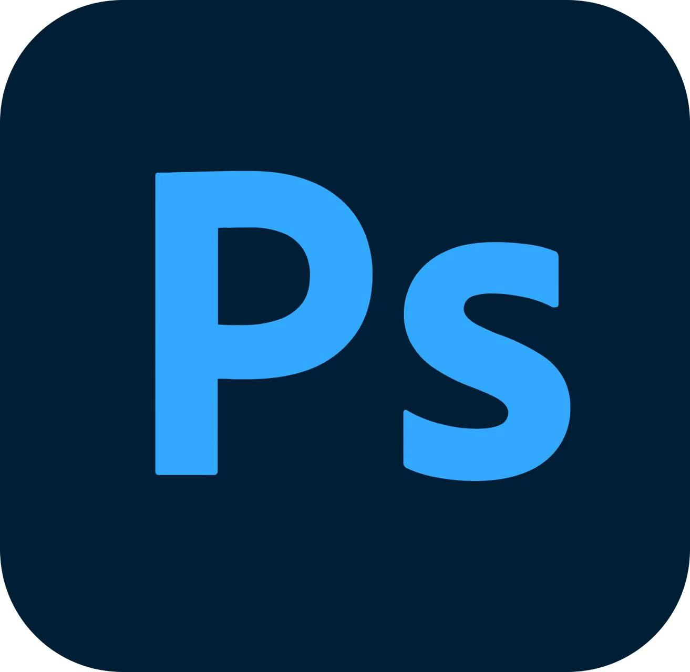

欢迎来到我的个人知识库
从文艺复兴到抽象表现主义的视觉探索
在视觉艺术的浩瀚长河中，绘画不仅是技艺的展现，更是时代精神与世界观的镜像。本文旨在探讨绘画风格与世界观之间复杂而微妙的相互塑造关系，通过案例分析，揭示两者如何在历史的长廊中携手并进，共同编织出人类文明的多彩篇章......
汉中市各地积极做好防汛抢险救灾工作 保障人民群众生命财产安全
摘要
本文报道了佛坪县陈家坝镇抗洪救灾实况.
关键词：
汉中市、
抢险救灾、
防洪
佛坪郭家坝村送水解民忧
摘要
本文是对汉中市佛坪县一村的实况报道
关键词：
为人民服务、
乡村振兴、
佛坪县
人工智能发展现状与趋势
作者：李四 | 科技导报 | 2023-12-01
Adobe Premiere Pro

Adobe Photoshop
菜鸟教程,提供了最全的的web技术基础教程,介绍了HTML教程、CSS教程、Javascript教程、Python基础教程，PHP教程等各种建站基础
网页设计学习感悟
这学期的网页设计课程让我收获颇丰。从最初对HTML和CSS的陌生，到现在能够独立开发网页，这个过程充满了挑战与成长。我深刻理解到网页设计不仅需要掌握技术知识，更需要具备审美能力和用户体验思维。通过课程项目实践，我学会了如何将创意转化为现实，如何让网页既美观又实用。这门课程不仅教会了我技术，更培养了我解决问题的能力。